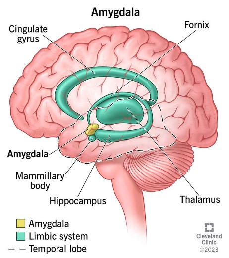

Anxiety
Anxiety is a natural response to stress and danger, preparing the body for action. However, persistent and excessive anxiety can indicate an anxiety disorder, affecting daily life and mental well-being.

What Part of the Brain Does It Affect?
- Amygdala: Governs fear and emotional regulation, becoming hyperactive during anxiety.
- Hippocampus: Plays a role in memory and learning but is sensitive to stress-induced shrinkage.
- Prefrontal Cortex: Responsible for rational decision-making and focus, but its activity reduces under chronic anxiety.
What Hormones Are Involved?
- Cortisol: Elevated during stress, this hormone intensifies fear responses.
- Serotonin: A neurotransmitter regulating mood; low levels exacerbate anxiety.
- Norepinephrine: Heightens alertness but may contribute to excessive worry.
Effects of Anxiety
- Short-Term Effects: Restlessness, rapid heart rate, and difficulty focusing.
- Long-Term Effects: Chronic stress, sleep disturbances, and increased risk of depression.
Common Signs of Anxiety
- Persistent worry or fear.
- Difficulty concentrating or sleeping.
- Avoidance of triggering situations.
- Physical symptoms like sweating, trembling, or a racing heart.
Here Are Some Tips on How to Manage Anxiety
Habits
Breathing Techniques: Exercises like 4-7-8 breathing reduce stress and enhance relaxation.
Mindfulness: Practice meditation and grounding techniques to focus on the present.
- Maintain a regular sleep schedule to stabilize mood.
- Engage in physical activities like yoga or jogging to reduce tension.
Foods
Magnesium-Rich Foods: Leafy greens and nuts help calm the nervous system.
Antioxidant Foods: Berries and citrus fruits combat oxidative stress, which can worsen anxiety.
Omega-3 Fatty Acids: Found in fatty fish, walnuts, and flaxseeds, these reduce inflammation and improve mental health.
Bible Verse
"Do not be anxious about anything, but in every situation, by prayer and petition, with thanksgiving, present your requests to God." – Philippians 4:6
Inspirational Quote
"Worry does not empty tomorrow of its sorrow. It empties today of its strength." – Corrie Ten Boom
References
- National Institute of Mental Health - Anxiety Disorders
- American Psychological Association
- PubMed
- Mayo Clinic
- Harvard Health